Mistolar Experiences
of
Elder Kendell Hellewell
First trip to Mistolar
The first time I learned about Mistolar was when I arrived in Paraguay on May 5th 1983. I originally had been assigned to the Monterrey, Mexico mission and couldn’t get a visa. I received my new calling the day before I left the MTC. Because of this, I did not attend any of the cultural classes that they taught in the MTC. When I arrived in Paraguay, Elder Barnes and Calhoon were in the office from Mistolar because one of them had gotten the mumps while out in Mistolar and had to have an airplane fly out and get them. They filled us greenies with a lot of wild stories and I decided right then and there that I never wanted to go to the Chaco. In my first interview with Pres. Ramirez that night, I explained my farm background and the experience that I had working with horses and he said he would have to send me to Mistolar. I kept this attitude of not wanting to go to Mistolar until I was actually called to go there. I was probably one of the few Elders in the mission who had no desire to go there and feared that I would.
During my mission I watched to see who had been called to Mistolar. When Elder Powell was called, I was relieved because I had only entered the mission a few months after him and I thought that they wouldn’t call two of us to Mistolar that would be going home so close together. I was soon to start on the experience that has shaped my life immensely and that I think about every day some 25 years later.
On Friday December 2, 1983 I was in my room studying before we were to go out for the morning. My companion, Elder Webster, walked in the room and said that I was wanted on the phone. My first thought was that it was Elder Redd my MTC companion calling about our p-day activity planned for Monday, but I turned to my companion and said that it was the president and that he was sending me to Mistolar. I went and talked on the phone to Pres. Ramirez, he informed me that I had been called to go to Mistolar. I was in shock and all I could say was I had to think and pray about it. I went back to my room and collapsed on my bed and then I remembered what I had said to Elder Webster about it being the mission president on the phone. This served as a sign to me that my calling to Mistolar was from the Lord and that he had an important work for me to do there.
I was instructed to go to the office on Monday and discuss the upcoming change and to meet Walter Flores. I met Walter on Monday and one of the first things that he asked was if I played the piano. I know he was disappointed because he stated that he had asked the mission president to send him someone who could teach the members in Mistolar how to play the piano. I took this as a sign that the Lord must want me there because I did not fill the requirements that they were asking for, yet the Lord knew that I was the one to be called at this time.
On Sunday December 11th, I left San Lorenzo and went to the office to begin my great experiences of the next eight months that I would spend as a Chaco missionary. On Tuesday December 13th the Assistants to the President, Elder Powell and I left for Mistolar at about 11:30 p.m. The APs were driving us as far as Neuland where we were to meet up with Walter and he would take us the rest of the way to Mistolar. We arrived in Neuland at about 6:30 in the morning. After Walter arrived, we went and ate and bought supplies. I remember as the APs were leaving that I was scared of what was coming and I really wanted to go back with them but I knew that I had to do what the Lord had called me to do.
We left Neuland at 10:30 that morning and arrived in Mistolar at 6:30 that evening.
The road was generally dry with a few wet spots.
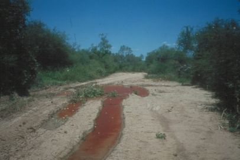
The trip out was relatively uneventful.
Everyone in the village came out to greet us. I felt almost like we were the visiting royalty. Everyone wanted to shake my hand. This was my first introduction to the wonderful people of Mistolar whom I grew to love very much.
This is the missionaries’ house.
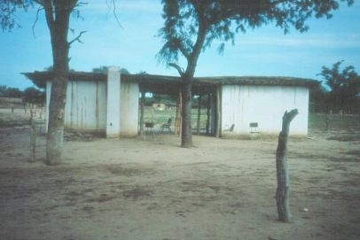
The sleeping quarters are on the left and the kitchen is on the right. It was made of adobe and consists of two rooms separated by a covered open area.
This is the place where we collected our drinking water.
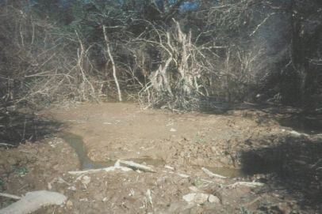
When I first tasted the water, I thought it tasted and smelled like it came from a swamp. The first time we filled our water barrel, I realized it tasted like this because it did come from a swamp.
Our beds were composed of a wood frame with cowhide strips stretched across the frame to support the mattress. Mine was really loose so I paid someone to restretch the leather. To do this, they soak the leather and then restring the bed. When the leather dries it shrinks and you have a tight bed. When I got my bed back I thought that I had probably made a mistake because now it smelled like a wet cow. It was hard to sleep on the bed until the smell went away. Another problem with the bed that I had was bed bugs. I would have these dreams of blood splattering and I would wake up with blood on my pajamas. I then noticed bed bugs up in the corners of my mosquito net. Some members told us how to get rid of the bed bugs. We had to take all of our stuff out of the room and put it in the sun. I did not think that this would work but it did and I had no more troubles with bed bugs.
Since this was the middle of the summer it was very warm at night and we had no electricity for fans. Our mosquito nets were made of a very heavy cloth-like material that kept the mosquitoes out but also kept out any breeze that would come through the windows, so the netting was hot and uncomfortable to sleep under.
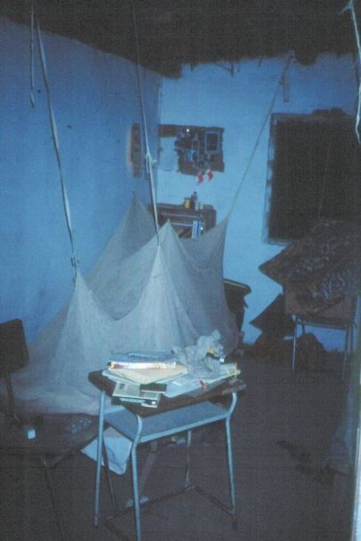
I would sometimes stick my head out from underneath the mosquito net until the mosquitoes would drive me back under.
Young children were constantly coming to the missionaries’ house to visit.
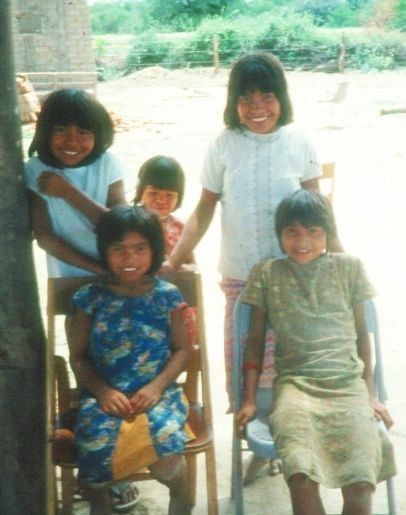
One of the girls would always say goodbye with the same phrase “paacume clem buff” (how I would spell it in English). I had one of the men translate it for me and it translated as “Goodbye dead white man”.
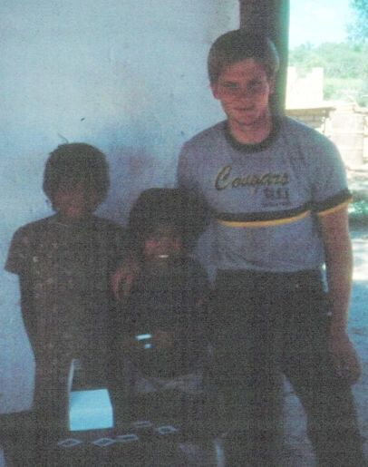
The young children loved to come and play in our horse trailer.
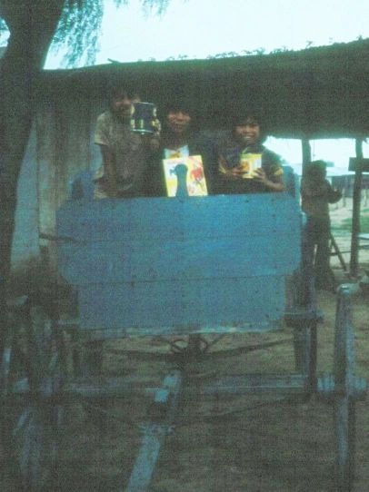
One of the youth that we played soccer with.
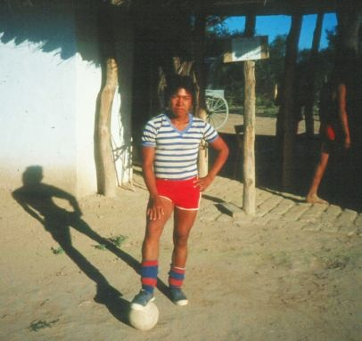
Elder Powell caught a lizard in our house.
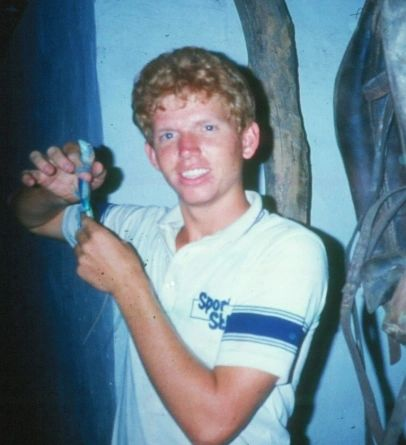
Our outhouse only had three walls and faced the uncleared area.
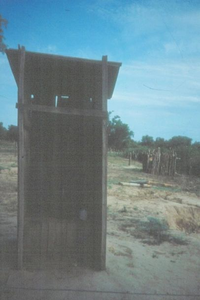
I realized that there was a trail not too far into the bushes that people would walk on. So you had to pay attention when you wanted to go to the bathroom.
For Christmas, the branch primary put on a cute nativity pageant with the children acting as Joseph, Mary and the wise men.
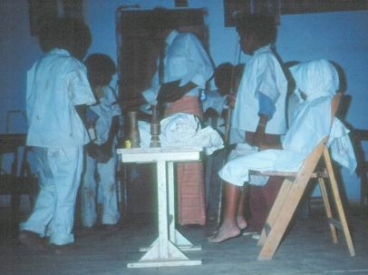
It was really cute and I was glad that I was there to see it.
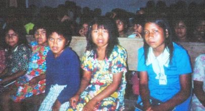
A couple of weeks after I had arrived in Mistolar, I experienced the first death of one of the people living there. One evening a man brought his son to us. He was unconscious but breathing. The father explained that his son had eaten some food before it was ready. There is this fruit (bola verde, which means ‘green ball’) that is poisonous to eat unless it is boiled for 24 hours. This little boy had eaten some fruit from the pot before it was ready to eat. My companion and I gave him a blessing but he died shortly thereafter. Elder Powell and I gave him CPR but we were unable to revive him. I then learned that the Nivacle have a tradition of screaming and howling when someone dies. This happened all night long and into the next day. At first it frightened me a little. Whenever you heard this howling you knew that someone in the village had died.
The women in the village would make baskets out of leaves they picked from a cactus-like plant.
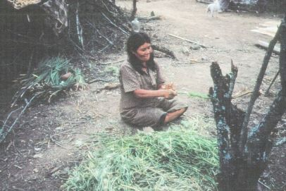
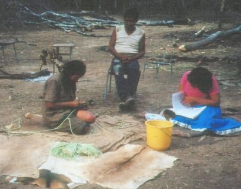
Here’s the Chapel as seen from our house.
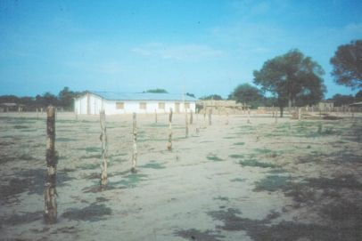
On Sundays, we would have our church meetings and we would sometimes also travel to another settlement about 7 km away and hold Sacrament meeting with this group of people.
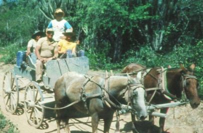
When Walter was not there, we used the horses and wagon to travel around the area.
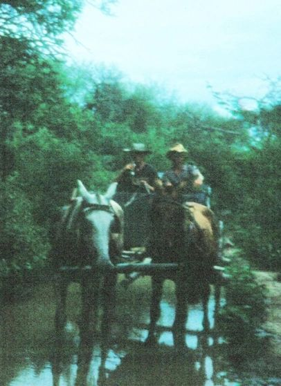
This is some of the terrain and area that we would travel with the wagon when we visited areas outside the village.
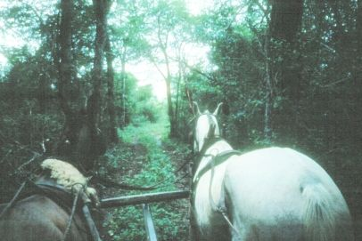
In the evenings we would visit with the members. We would often sit around the campfire and tell stories.
Here’s I am with the person we called medicine man.
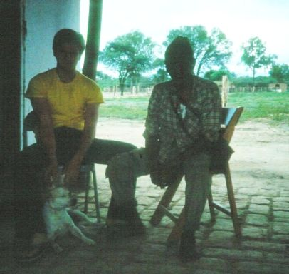
Some typical Chulupi houses.
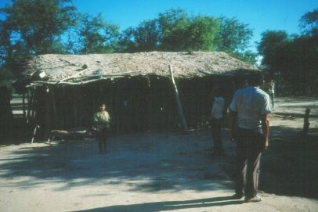
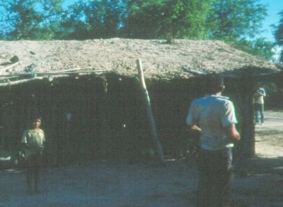
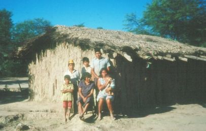
One of the things that surprised me was how musical the members in Mistolar were. They had the most beautiful voices as they sang in the choir in the church meetings. I then understood why Walter had wanted someone who could play the piano. I regretted very much that I had been unable to learn how to play the piano and I vowed that all my sons would have to learn to play the piano. I wish that I had tapes of the choir singing some of my favorite songs. We also had a lot of branch activities.
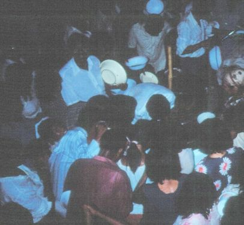
It seems like the most popular ones were dances. The little children just loved to dance to the music. The village had a generator and lights that we used mostly for the branch activities that were held at night.
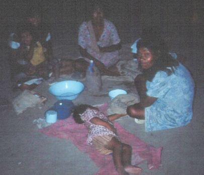
They made up a soup in the old 55 gallon drum. It looked nasty and I would not eat any of it.
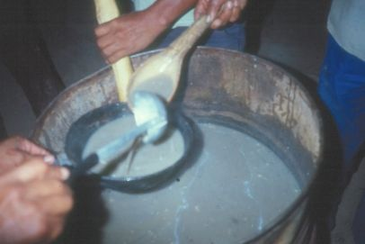
A boat was used by the members to cross the river to go to Argentina.
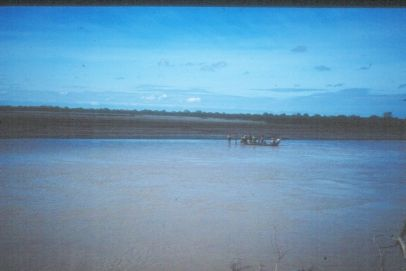
On Friday January 6th Elder Powell and I crossed the river and walked to Potrillo, Argentina. It was about a two hour walk. We were able to buy some soda and some supplies that we needed. It was a long walk back to Mistolar and I was really tired when we arrived home. Walter arrived the next day and brought us some supplies and much needed letters from home. He wasn’t staying long because someone was paying for him and his family to go to the temple in Brazil. This was a great blessing and a benefit for Walter.
During this time, I experienced my first two instances of being sick in Mistolar. One night, I woke with really bad nausea and I was vomiting and I had diarrhea really bad. I was okay the next day. I then developed a bad ear ache. It got so bad that I could not get out of bed. I finally had Elder Powell and a member give me a blessing. A few hours later, someone brought me some ear drops that had expired but I used them anyway. It took about a week before my ear ache was all gone.
In late January, the river started to rise. Little did I know what this meant for the future and the great changes that this would bring to Mistolar. The following are a few entries from my journal.
Wednesday, February 1, 1984
A lot has happened since I last wrote. The river started rising and rose up almost to the chapel. The whole village moved about two kilometers away across a small side channel of the river which was about 200 meters wide.
The Nivacle used a small boat to carry their belongings across the channel. The channel was about chest deep. Elder Powell and I waded across it once and several times in a boat. We held meetings at the temporary campsite on Saturday night and Sunday morning. Elder Powell and I stayed in our house and so we had to travel back to the house Saturday night and then back to the campsite on Sunday morning. Sunday afternoon we went to Fortin Buenos Aires which is about seven or eight miles away. It took us about three hours to get there in horse and wagon because we stopped and fed the horses along the way. We arrived about 8:00 p.m. and they were just starting to talk to Asuncion by short wave radio. We left a message to have Pres. Ramirez be at the radio to talk to us in the morning.
That night we just threw our blankets out on the ground and slept on them. The mosquitoes were bugging me real bad and the ground was very hard so I didn’t get much sleep. In the morning we talked with Pres. Ramirez and he told us that Walter would be out on Wednesday. We then had a guy ask us if some of the Nivacle members would go back with him for a few days to work. We told him that they probably would. They are going to harvest buffalo grass seed. They get paid 80 guaranies for every kilo picked and they can get about 10 kilos in a day. This is about $2.30 per day.
We then ate breakfast with a Nivacle person that we met there. The richer Argentineans wouldn’t give us anything to eat but the poor natives would. We then went back to Mistolar. The water level in the channel had dropped to about knee deep so we were able to take the horses and wagon across to our house.
The next morning, Elder Powell and I helped move the chairs back to the chapel. We’re waiting for Walter to get here. We had our doubts that he would make it because the roads were so bad.
Friday, February 10, 1984
To our surprise, Walter did make it like he had planned. He was unable to bring the truck all the way to the village because of the channel. Walter only dropped off our letters and then left to go back to the truck. He had some supplies that he wanted to drop off. The next day, we received word that Walter’s truck had broken down. We had to go in our horse and wagon to pick him up. Two other wagons also came to bring the food that Walter had brought to Mistolar.
On Monday, Walter was able to communicate with Asuncion and they said that they would send some mechanics out in the mission four-wheel drive Trooper. On Tuesday, Walter left to go to the pickup and wait for the mechanic. He said that he would come and get us before he went back to Asuncion. We found out today that Walter and the mechanic left for Asuncion without us. So we are planning on finding our own way there on Saturday or Monday.
Note: We talked with Walter about leaving us and he stated that the mechanic refused to go the few extra kilometers to Mistolar to pick us up. We had now been in Mistolar for two months and were all out of supplies and the members did not have much food to feed us. The river was too high for us to cross to go to Argentina and then to Asuncion, so we decided to take the horse and wagon to Neuland and from there catch the bus to Asuncion. The next entries are from my journal describing our horse and wagon trip to Neuland.
We left Mistolar on Monday the 13th of Feb. in our horse and wagon. Traveling with Elder Powell and I was Cicilio Flores. The first day we had to cross the channel about a mile from Mistolar. It was about chest deep so we had to take all of our stuff out of the wagon and carry it across on our shoulders and then take the horses and wagon across. It was so deep that at one point the mule we were using had to swim. We were using one mule and a horse to pull the wagon because one of the missionary’s horses had died.
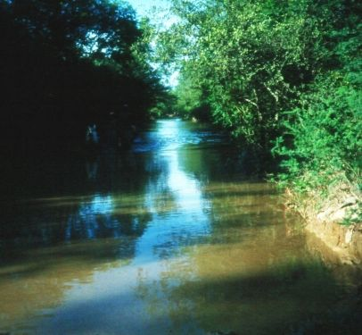
This is the channel that flooded, making the village into an island. This is the same channel that we would later have to move the whole village across.
We traveled for about two hours and at noon we arrived at Fortin Buenos Aires and stopped and rested for awhile. After resting, we continued on our way until we made it to where the pickup had broken down. We took a short break there and then continued to Quattro Marias.
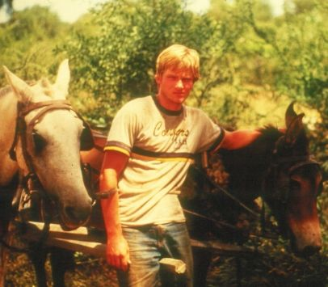
We arrived at Quattro Marias at about 7:30 and they invited us in to drink some terrere. Immediately afterwards, it started to rain so they invited us to eat and spend the night with them. We had to go out and put the horses out to eat and bring our stuff in the house. I was drenched when we finished. It rained really hard the whole night. It was one of the hardest rains that I had ever seen. I was very thankful that we had a house to stay in rather than sleeping out on the trail.
Day two Feb. 14: We got up and ate breakfast with the nice family that had invited us to stay with them. It seems like all we ate with them was some beef cooked with something that resembled ground wheat. This was better than the food that we were able to provide for ourselves. We were very low on supplies and our diet consisted mostly of flour tortillas and water. The flour tortillas were just flour mixed with water, flattened and fried in oil. It is amazing how good I thought these tasted.
We traveled until we found a good place to rest the horses and get them something to eat.
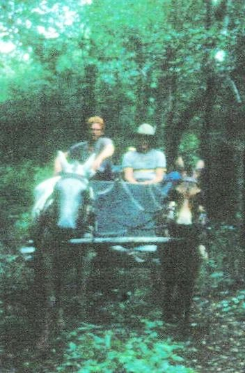
We cooked tortillas for lunch. They were pretty good. The traveling was very hard this day and very muddy. We stopped for the night at a place called Sim Bollar. The family there gave us a room to sleep in and a good meal to eat. I am amazed by how friendly everyone along the way has been to us. The only problem here is that there was not much for the horses to eat. It rained a little bit during the night.
Day three, Wednesday Feb. 15: We got on the trail at about eight o’clock in the morning and traveled till about ten and stopped for a few hours. We went quite far the third day and traveled until about midnight because we couldn’t find water for the horses. We slept out on the ground and we were quite lucky because this is the first night that it had not rained.
Elder Powell caught an armadillo on the trip.
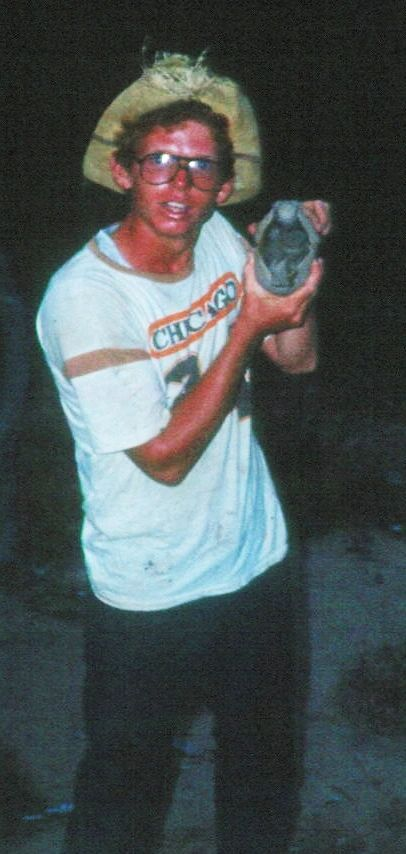
Day four, Thursday Feb. 16: This morning we got up and traveled for about an hour when we arrived at a small store. We took a short break and bought some soda pop and supplies. Our horse was really tired and couldn’t pull the wagon anymore so we stopped early for the day. I have probably pushed the horse too hard hoping to get to Neuland in time to catch the bus to Asuncion. The mule was amazing. She seemed to get stronger the further we went.
Day five, Friday Feb. 17: Today we got up and left by about 8:00 a.m. We only had about 48 more kilometers to go. We thought that we should be able to get there in good time. We did not get there until late in the evening. We arrived too late to catch a bus to Asuncion. We ate dinner with some truckers.
Day six, Saturday Feb 18: This morning we got up and ate breakfast at a restaurant. It was pretty good, especially since we had been doing our own cooking for two months. We found a place to take care of our horse and mule and then we paid a guy to drive us to Filadelfia because we thought that we would have a better chance of getting a ride to Asuncion from there.
We hitched a ride from Filadelfia at about 2:00 p.m. and made it into Asuncion at ten that night and made it to the office at 10:30. They were surprised to see us.
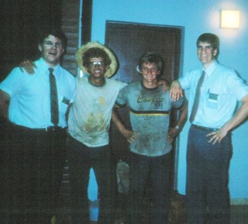
We were extremely dirty and smelly, tired and hungry when we arrived back in Asuncion. It took us 6 days to travel from Mistolar to Asuncion.
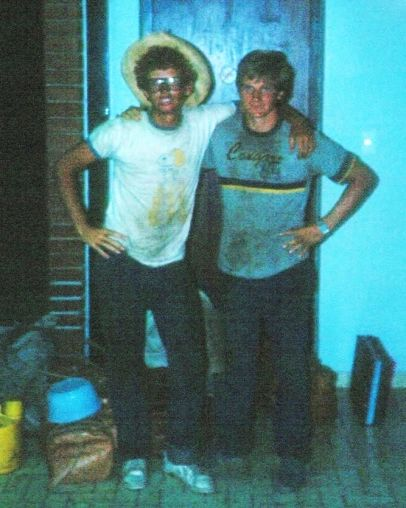
We went down to the restaurant by the office to eat and then we stayed up until midnight reading our letters.
We stayed in Asuncion for four weeks. We spent the time getting supplies and preparing to go back to the Chaco.
Second Trip to Mistolar
Walter, Elder Powell and I along with a few other people left for Mistolar on the evening of Friday March 16. Shortly after we left it started to rain very hard. It continued to rain for most of the trip, making the roads slick and treacherous. We first went to Cerritos and dropped off a Nivacle boy who was going to go to school with Walter’s boys. We then left at about 10:00 p.m. to continue our trip to Mistolar. At about three in the morning we came to the end of the paved road and the road was slick and slow going from there on. We arrived in Neuland at about 8:00 in the morning after a short stop in Yalva Sanga.
The trip from Neuland to Mistolar ended up being difficult and slow because of the wet and slick roads.
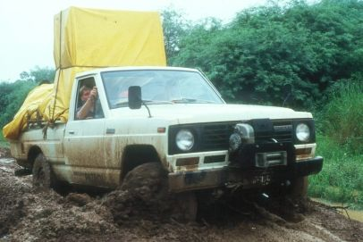
The roads were extremely bad and flooded with water for large portions of the trip. We spent a lot of time using the winch to pull the pickup trough the worst spots.
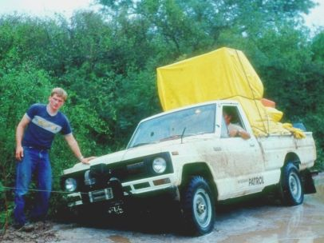
I thought the slickness of the roads was very similar to driving on ice and snowy roads in the winter.
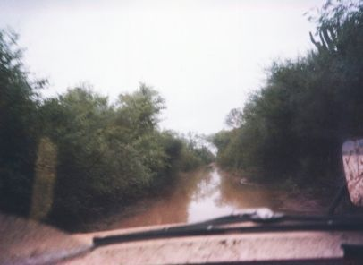
We had many close calls with the pickup almost running off the road and one time the pickup almost rolled on us. The road split into two parts. One went up hill and the other down. Since the lower one was flooded and looked impassible, Walter took the upper road and halfway up it, the truck slid sideways onto the lower road.
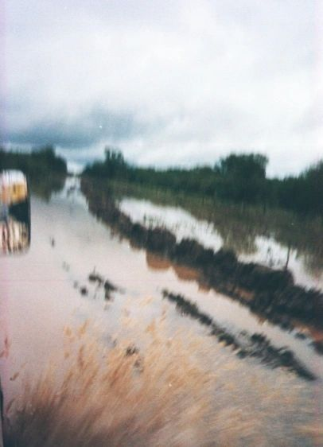
We passed through many places that I thought I wouldn’t have been able to take a tractor through.
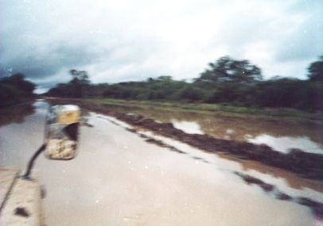
We had to use the winch one time before we got to Quattro Marias which is about 35 km from Mistolar.
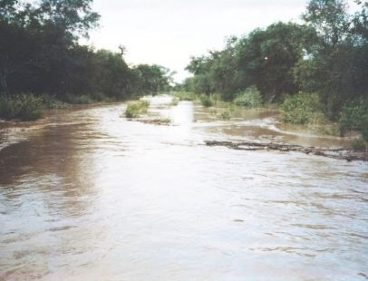
From Quattro Marias to Fortin Buenos Aires the road became nearly impassible. To make matters worse it was dark and late at night so we only had the lights from the pickup. Walter said that he had never seen so much water. At some points the water was two to three feet deep. At one point the pickup stalled because water got into the air filter and caused a vacuum in the gas tank. One stretch we could only cross using the winch. I would hook the cable from the winch around a tree and then when it had pulled the truck out I would run in front of the pickup until it became stuck and then I would put the cable around another tree. One time, I became covered with large black ants when I was putting the cable around the tree because it was dark and I could not see the ant hill.
We finally arrived in Mistolar at about midnight. I was really tired because I had not slept in two days.
We had only been in Mistolar for two days when the river started to rise because of all the rain.
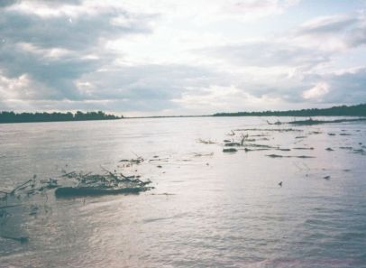
Since the area is very flat, the river only had to rise a foot above its banks to flood a large area.
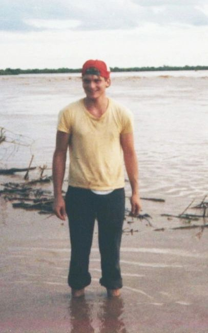
On Wednesday March 21st it was decided that we needed to build a dike around the chapel to keep the water from flooding the building.
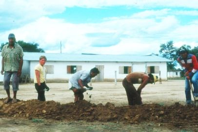
Here I am helping to dig the dike around the chapel.
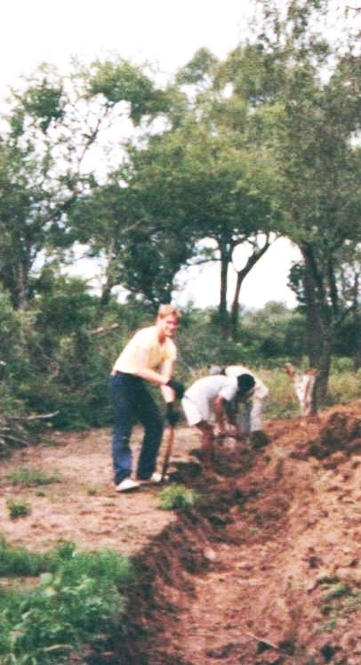
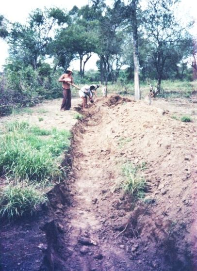
We worked on the dike all day long and had to walk the dike every few hours at night to make sure that there were no leaks.
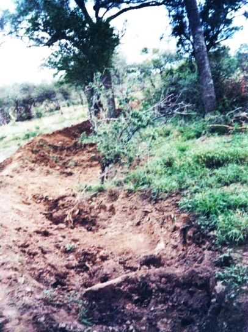
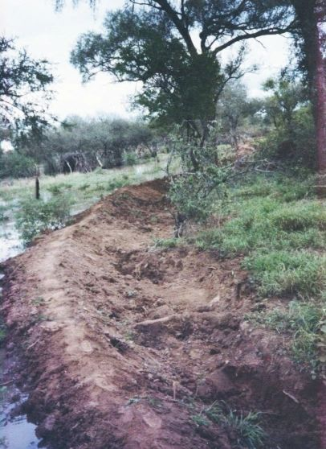
I had shoveled so much that I got blisters on my hands even though I was wearing gloves most of the time.
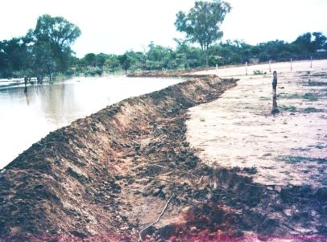
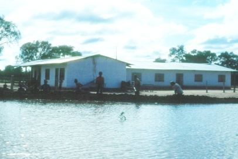
We didn’t have much time to cook food, and when we did we were too tired to bother.
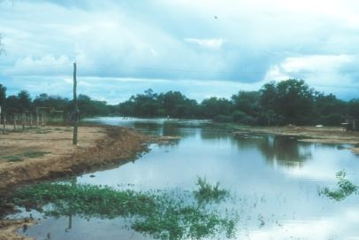
Pictures of the flooded road in Mistolar.
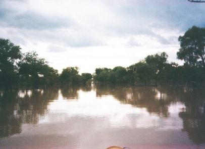
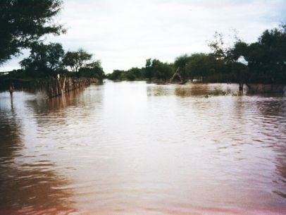
On Sunday morning March 25th we had to get up at 3:30 in the morning to pack all of our stuff and move out of our house because we were concerned the rising water would break the dikes. We moved all of our belongings to the chapel. It rained all day and the waters continued to rise so we decided to take all the windows out of the chapel in case the dikes failed and the water caused the chapel walls to fall. We slept in the chapel Monday night.
On Monday morning at about 6:00 the dikes failed and the water rushed in to the chapel and the missionary’s house.
Here’s Walter standing on the trench after the chapel had flooded.
By 7:30 both the house and the chapel walls had caved in.
I’m standing in front of the collapsed missionary house.
The missionaries’ house after it had collapsed in the flood.
Elder Powell standing in the chapel shortly after the walls had collapsed.
Pictures of flooded homes in Mistolar.
We moved all of our stuff about a mile away to an old river channel that was flooded. We put up a tarp and made a temporary camp.
The whole village was moving their belongings to the channel.
The channel blocked the road and had to be crossed by all of the community to escape the rising flood waters.
The following pictures are the villagers hauling all of their belongings to the channel to have them carried to the other side in the row boat.
On Tuesday we moved all of our belongings across the channel in the boat and spent part of the day using the pickup to bring all the families to the channel. Here I am rowing the boat across the channel.
To make matters worse, our pickup was in Mistolar and it had to cross the channel. We were fortunate that we had a row boat and a big fiberglass baptismal font that would float.
We used the baptismal font to carry the goats and dogs across the channel. We would fill the font with goats and then pull it across the channel with the boat.
The last thing to get across the channel was the pickup. We built a barge with 7 fifty gallon oil drums that we tied together with logs that we had cut and wire that we had taken off of our fence. We drove the pickup onto the raft.
Many times it seemed that the raft was going to flip and dump the pickup into the water but the members were able to keep it upright. We tied ropes to the pickup and had about 15 men in the water holding the ropes trying to keep it upright. We then tied the raft to the boat and pulled the pickup across the channel.
I think it was a miracle that we were able to get the pickup across the channel without anyone getting hurt. We came very close several times to losing it in the water.
The following pictures are families camped along the channel during the move out of Mistolar.
Tuesday night it rained on us and I was glad I had set my bed up under the tarp. Because of the rain, we rose from bed at 4:00 in the morning and had some mate dulce and then went back to bed until about 7:00 a.m. During the day, we moved all of our stuff about 3 km to the site of the new village.
Villagers clearing the brush to build a house.
People working to clear the brush for the new chapel yard.
Elder Powell’s leg had become badly infected, so we had to return to Asuncion to have a doctor care for it. We put the mission’s belongings under a tarp that a few men had set up for us, packed our own belongings and got ready to return to Asuncion.
We left Mistolar at about 6:30 p.m. and at that time I knew that I wanted to return because I had developed a great love for the people. I did not realize that I would not be able to return until June. About an hour after we left, the pickup died because the fuel filter was full of water from when we had carried it across the channel. I was able to get the fuel filter off so that we could take the water out of the filter and get the pickup running again.
At about 8:00 we stopped because there was this large snake in the road. We played with it for awhile and took pictures of it.
It had a big bulge in the center showing that it had recently eaten a large meal.
I was riding in the back of the pickup with five men from Mistolar. It was uncomfortable, but I wasn’t too bad off. We had a tarp that we put over us to keep some of the rain off of us. At about midnight, we ran out of diesel. We didn’t know what was wrong because we thought that we had more. We had used more fuel than we had thought because of the bad roads and from hauling all of the stuff to the river channel. We walked about two miles to a ranch house (Quattro Marias) and spent the night there.
Elder Powell and I spent all day Thursday at Quattro Marias while the Chulupi men and Walter went to get the pickup. Elder Powell’s leg was getting worse and he was unable to do anything. All we ate at Quattro Marias was rice with dried meat in it. It actually tasted good compared to what we had been eating.
On Friday March 30, we were able to speak to Asuncion by short wave radio and they agreed to send an airplane to pick us up. We ate some more rice and meat and got ready for the plane to come. The people that we were staying with killed and butchered a cow so we had a nice barbecue. It was interesting to see how they preserved the meat. They cut it into thin ribbons and hung it on the clothes line to dry in the sun. At about 1:30, I put on my swimming shorts and helped carry our stuff across a lagoon to the runway. We waited about two hours for the plane. When we finally heard it, the pilot did not see the runway and flew on by. About a half hour later, the plane returned and landed on the runway. The runway was very muddy causing the plane to get stuck. We had to lift up the plane from under the wings and carry the plane to a dry spot on the runway before we could get in and take off.
Here we are with the pilot and someone from the church offices in front of the airplane that picked us up in Fortin Buenos Aires.
It was a very frightening takeoff. One wheel would stick in the mud causing the plane to veer and head to the side of the runway and then when the pilot would get it straightened out we would be flung in the other direction. It was a miracle that we were able to get airborne from this muddy runway.
We flew over Mistolar and I was able to get some nice pictures from the air.
The Pilcomayo river from the airplane.
It was about a two hour flight back to Asuncion. I had not expected to be back in Asuncion so quickly. That night I went with Elder Powell to the doctor and he was able to get some antibiotic for his leg.
Elder Powell was to remain my companion for the next 7 days. We spent a lot of time at the Presiding Bishopric Office working on the problems of Mistolar. We also went to the Red Cross and were able to get some boxes of clothes that Elder Powell and I sorted and prepared to be shipped to Mistolar. On April 7, I took Elder Powell to the bus station where he went to Encarnacion as a zone leader. He had served well as a missionary in Mistolar.
On April 11, Elder Luis Montaño from Uruguay became my new companion. He was fairly new in the mission, so I was quite surprised to have him as my companion. I grew to love Elder Montaño. He had a very funny personality and we got along great. He developed a great love for the Nivacle people and they grew to love him. Elder Montaño and I were assigned to work in the Centro branch in downtown Asuncion until we were able to get back to Mistolar. I hoped that this would not take too long. In this time period, I was able to get copies of all the membership records for Mistolar and started going through the records to figure out the status of the members in the branch. I didn’t realize it at the time but this was to become the greatest work that I would do for the branch. With all the problems of the flood and there being no missionaries there for a couple of months, I knew that there would be a lot of work to reorganize the branch.
Third Trip to Mistolar
Finally on Wednesday the thirteenth of June the time came to go back to Mistolar. Making the trip out with Elder Montaño and I were Pres. Ramirez the mission president, Walter, Juan Andreas Aquino, and Bro. Masal from Uruguay. We left at about 4:20 in the morning and had reasonably good roads until we were about 70 kilometers from Mistolar. At this point, we stopped at a military base and ate bread and cosido with the leader there. Pres. Ramirez was a retired colonel from the army and it was great to see all the respect that the military people gave him.
Here is Elder Montaño and the three company vehicles on this trip.
At about 8:00 we hit a bad stretch of road for about 200 meters. We finally made it into Mistolar at 9:00 that night. We had a barbecue and then went to bed. Elder Montaño and I slept outside and we gave our tent to Pres. Ramirez and Bro. Masal.
I was amazed at how much work had been done on the new village. The poles for the new chapel had been set and the roof had been built but the walls had not yet been completed.
Most of the villagers had built their houses and the village was pretty well set up. The spirit in the village was good and everyone seemed to have recovered from the flooding. This location was about 3 km from the old Mistolar village and my memory is that it was selected because it was on higher ground and would not be flooded in the future.
Thursday morning we had a branch conference where I was sustained as the branch president and was given two new councelors.
Here is Gonzalo Osorio, who became my first councilor in the branch presidency.
Mistolar choir singing.
After the conference we ate and then Walter left to follow the mission president and the others back to Neuland to make sure that they made it okay. He returned at about three in the morning.
On Friday, Elder Montaño spent the day getting our tent and living quarters set up. The house for the missionaries was basically just large poles stuck in the ground with a metal roof.
There was also some metal put on for walls. We had a tent that we set up for us to sleep in.
Our new outhouse.
We cooked all of our meals outside over an open fire using a tripod to hold the pans over the fire. This worked pretty well except when it rained.
Here Elder Montaño and I are eating a typical meal.
Several youth sitting around our campfire. People liked to come and visit us and sit around the campfire. This trip was during June and July, the coldest months of the year in Mistolar.
This is the dry channel that was flooded and we had to cross with the pickup, goats, and possessions of all the villagers.
This is the old chapel yard after the flooding.
The old chapel after the flood.
One of the yards in the village after the flood. Note how the soil has been deposited half way up the fence.
A Chulupi family walking along the road.
The big disadvantage for the new location was that it was a long way to the river to get water. The women had to carry the water from the river to the new village. This was several miles and would cause a lot of pain for the women. They would usually carry the water in a bucket on their head. I cannot understand how they were able to do this.
The Church purchased a trailer to get water from the river. When Walter was in the village, we could use the pickup to pull the trailer back and forth from the river.
Here Elder Montaño and I are walking on the dry Pilcomayo river bed.
Elder Montaño standing on the banks of the Pilcomayo river.
Here I’m putting lights in the trees for the church dances.
Children dancing at a church dance.
The people in Mistolar loved to dance and have community activities.
I spent most of the next two weeks going over the membership records. I think Walter was a little concerned about me because he kept asking my companion what I was doing. I reviewed all the records to determine which of the young men needed to be advanced in the Aaronic priesthood and with my counselors I set up the deacons, teachers and priests quorums in the branch. We advanced 9 youth in the priesthood on one Sunday. I then went through the records and identified all the children who had turned 8 years old and had not been baptized. My memory is that we had about 10 children that needed to be baptized.
My greatest experience came when I worked with Walter to interview the worthy men to be ordained Elders in the Melchizedek Priesthood. Walter was in the mission Presidency and was able to get permission to interview and ordain the men who were willing and worthy to be advanced to the Melchizedek priesthood. It was an amazing experience to see the men line up to be interviewed by Walter and I, to see them humble themselves and go to other men in the branch to ask them for forgiveness for something they had done to them. There was such a sweet spirit in the branch as the men prepared themselves to receive the holy priesthood. Walter presented the names of about 20 men to be ordained to the office of Elder in the branch. I think this was one of the great stepping stones that the branch needed to go through so that they could be self sufficient in running the church and not have to rely on the missionaries. I think that this is one of the reasons why I was the last missionary to serve as branch president and was to open the way for many of them to be able to go and receive their temple endowments.
The second week of July, most of the village traveled to Juarez, Argentina for the men to play in a soccer game. Elder Montaño and I decided to go with them. We left Mistolar at about 2:00 p.m. and walked the hour to the river and crossed it in the boat. A lot of the people swam the river to get to the other side. We then walked about fifteen minutes where we got on a semi trailer pulled by a tractor.
It was a very dusty ride to Portrillo where we spent the night. At about 1:00 in the morning we all got up and rode the trailer to Juarez. It was an extremely dusty ride, as you can see from this picture of Elder Montaño on the trip.
At times it seemed like you would not be able to breathe because of all the dust. At about 7:00 in the morning, the tractor got a flat tire and we were still about 10 kilometers from Juarez.
We finally got to Juarez at about 10 in the morning. The people organizing the soccer game had a meal waiting for everybody. The food was not very good, but it was better than nothing.
Mistolar lost the soccer game and everybody thought that we had been cheated by the refs. They were supposed to have another tractor to take us back to Mistolar that evening but something happened and it would not be available until morning. We all had to stay for the night without any food and very little in the way of blankets for sleeping.
You can tell from this picture that it was cold there and many people did not have adequate clothing for the cold weather.
It was a cold night and I remember a little girl just shivering on the ground. I took my blanket and put it over her and spent the rest of the night sitting awake. We finally made the trip back to Mistolar the next day.
A new family moved into Mistolar and we were able to teach and baptize them. These were to be the only convert baptisms that I would have in Mistolar. It was always amazing to see the influence of the spirit on these wonderful people as they listened to the gospel being taught and gained a testimony of its truthfulness.
Two young women walking to the baptism.
Walter carrying many to the baptism.
A beautiful sunset on the Pilcomayo river.
The second week of August came very quickly and it was time for me to leave Mistolar for the last time. It was a bittersweet moment for me because I had grown to love the Nivacle people so much and I hoped that I had made a difference in their life like they had made in mine. In the twenty three years since then, hardly a day has gone by that I have not thought back on my experience in Mistolar and expressed thanks to my Heavenly Father for letting me have that great opportunity.
Kendell Hellewell